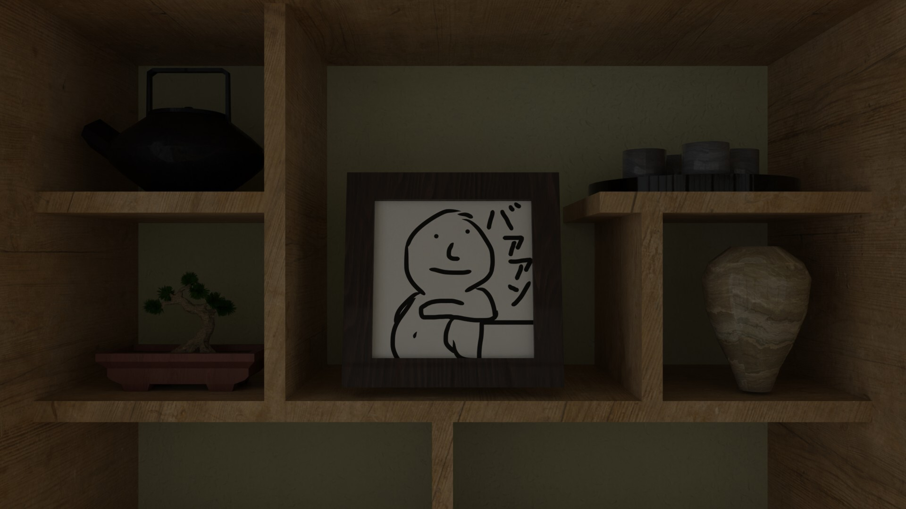
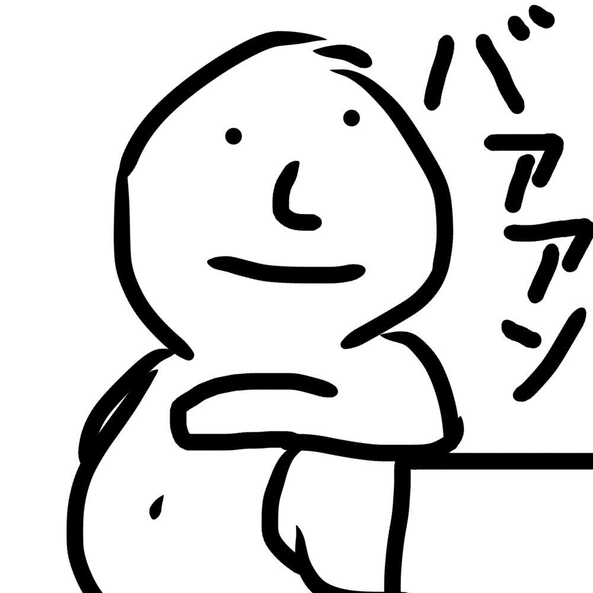

Works


©Haruya Matsushima


https://github.com/Hunter-form-14
氏名：松島陽也
現在の職：明治大学総合数理学部先端メディアサイエンス学科
所属研究室：宮下研究室（宮下芳明）
研究分野：ヒューマンコンピュータインタラクション（HCI）
趣味：食事、建築、映画、小説
特技：場を盛り上げること
得意なプログラミング言語：JavaScript：4,000行（2年半）、C＃：3,000行（3年）、C++：2,000行（2年）、Python：2,000行（2年）、Processing：2,000行（2年）、MATLAB：1,000行（1年）
得意なツール：Unity, Blender, Fifma, Arduino, DaVinci Resolve, Bambu Studio, Git, Render, SQL, AWS, OpenCV, React
保有資格：TOEIC 775点(2024/12/16)、色彩検定2級、普通自動車第一種免許
志望業界：インターネットサービス系・広告系
志望職種：プロダクトマネージャー・UXデザイナー・フロントエンドエンジニア
2020年4月：明治大学付属中野高等学校入学
2023年3月：明治大学付属中野高等学校卒業
2023年4月：明治大学総合数理学部先端メディアサイエンス学科入学
2027年3月：明治大学総合数理学部先端メディアサイエンス学科卒業予定